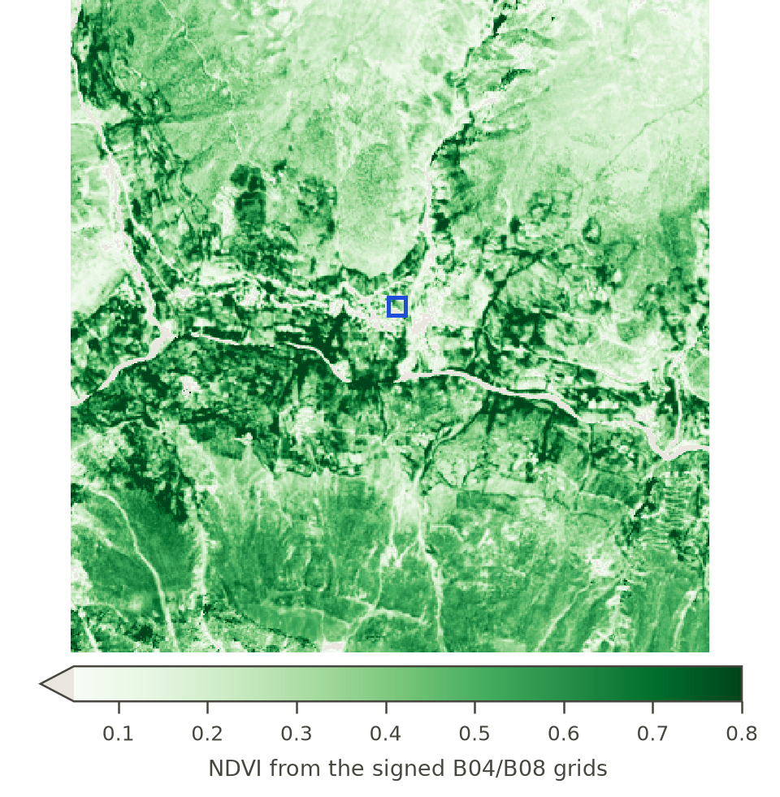

emem: A research on Content-Addressed, Verifiable Earth-Memory Protocol for AI Agents over Foundation-Model Embeddings
emem changes the handoff unit. Carry the address of the signed observation record, not a sentence about it. A later agent resolves the record, re-hashes the bytes and verifies the attestation before reasoning from it.
Three EO objects
| carry | world-state | receiver can |
|---|---|---|
| emem:fact: | one signed observation record | resolve + re-hash |
| emem:raster: | one spatial field + signed derivation | re-hash field |
| emem:cube: | that field through time | resolve members |
bundle, entity and cell intentionally have different strengths. The protocol does not pretend every token means “same bytes”.
Fig. 1 — One real observation becomes portable world-state
fact oj5cecci… · Keylong, Lahaul · every value below read from emem.dev on 29 Sep 2026offset −1000 (PB ≥ 04.00)
NDVI 0.4708994708994709range-read on demand, then stored; a definitive no-data is signed as Absence
tslot 2072164-bit cell ≈ 9.55 m; tslot = days since 1970 for a fast band
BLAKE3-256 →
oj5ceccile62uvm6 hedpuk67cjt2pqc7 z33mtsyuffgakxbx myaadeterministic encoding; any byte changed → another name
ed25519 attestation
RFC 6962 leaf · 2.54 Mco-signed by a second node (same organisation)
receipt v2: request, time, cells, fact_cids, proofthe receipt verifies offline in 0.13 ms



ADDRESS · the observation record names itself
A record is (cell, band, tslot, value, uncertainty, sources, derivation, signer, signed_at). emem serialises it deterministically; BLAKE3 of those exact bytes becomes its content id.
HAND OFF · carry the address, not the paraphrase
A trust boundary does not need the previous model’s context. It needs the token. The receiving agent can resolve → re-hash → verify → reason from the same cited record.
FIELD · give the model pixels, not prose about pixels
emem:raster: names a spatial field through a signed derivation; emem:cube: binds independently resolvable fields through time. The derivation pins AOI, band, scene, recipe, date and artifact hash.
VERIFY · check the sentence before it leaves the agent
guard/verdict resolves citations in a draft and compares the written number with the signed value at the writer’s precision. A mismatch becomes a typed refusal, not a confidence score.
DRIFT · agreement can rise while correctness falls
| full-context control | 72/72 correct · 36/36 agree |
| shared compaction summary | 0/72 correct · 3/36 agree · p = 0.035 |
| 20-turn handoff: prose · dense · BM25 · bundle | 2 · 8 · 20 · 20 correct |
| 599-turn run: citable, bundle vs BM25 | 100% vs 0% |
Pre-registered result; Fisher one-sided. Two open models on one host; no independent replication. The known phenomenon is lossy multi-agent communication. emem’s contribution is a handoff object whose cited evidence can be recovered and checked instead of paraphrased.
RESOLVE · RE-HASH · VERIFY
# one checkable object TOKEN='emem:fact:...' # resolve exact bytes curl .../memory_token/resolve # recompute its BLAKE3 id python verify_fact.py "$TOKEN" # verify the signed receipt offline python verify_receipt_tamper.py receipt_2026-09-29.json # then hand the same token to another agent
 emem.devpaper · source · verify · reproduce
emem.devpaper · source · verify · reproduceWhat holds: byte identity, spatial binding, signer/receipt integrity, replayable cited state.
What does not: objective truth, sensor accuracy, model correctness or a guarantee that the prose conclusion follows from the cited band.
The poster uses real tokens, real Sentinel-2 grids and independently re-run checks. Detailed prior art, audit defects, withdrawn claims and all reproduction scripts stay in the repository rather than competing for wall space.